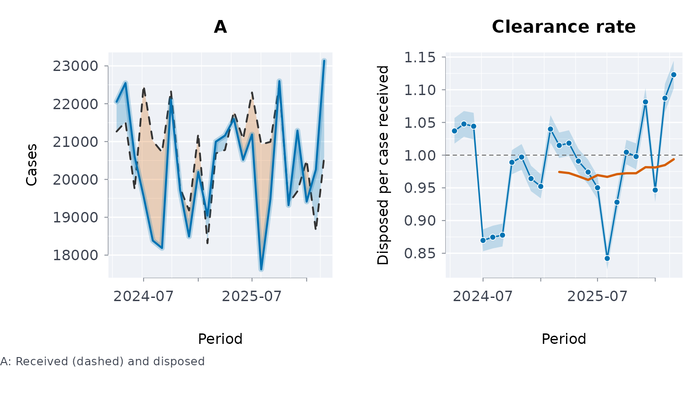
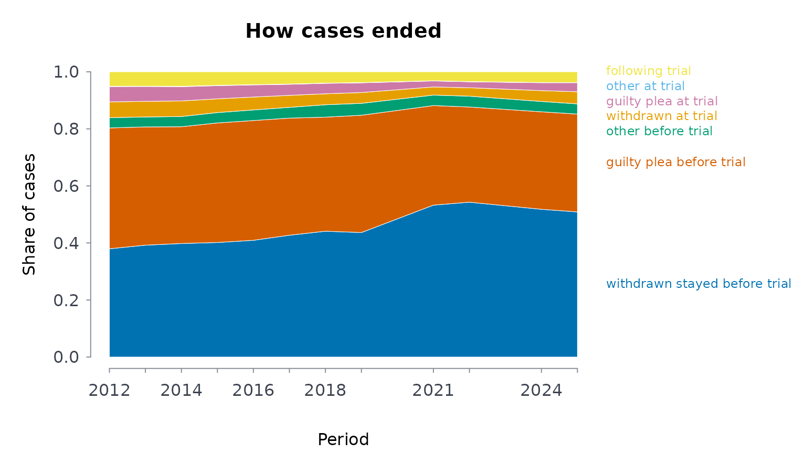
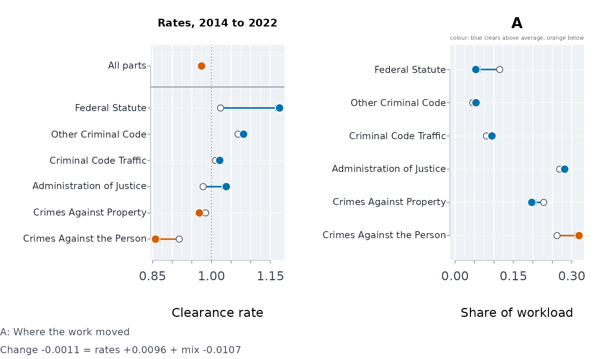
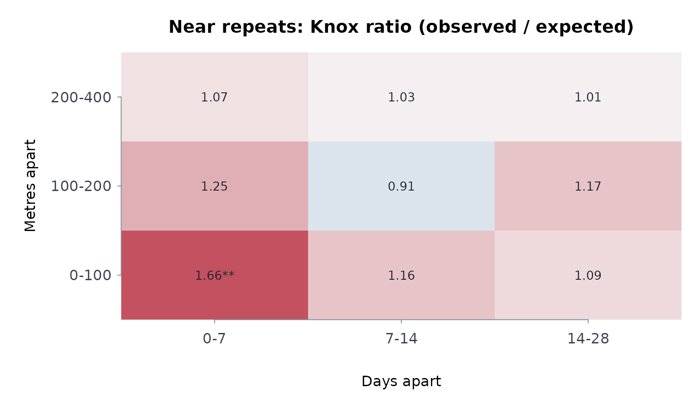

Courts and crime: flow, time, outcomes, place and case mix
Source:vignettes/courts-and-crime.Rmd
courts-and-crime.RmdCourt and police statistics are published as counts: cases received
and disposed each month, shares disposed within so many months,
incidents with a date and a place. This vignette works through the
questions those counts are asked to answer, on the Ontario Court of
Justice’s criminal statistics and the Toronto Police Service’s open data
(see ?justice-data for every file and its source). Each
section uses the excerpt shipped with the package; the full tables,
every edition and every court, load from the data hub:
clearance <- dload("ocj_statistics/clearance_rate_criminal")
offences <- dload("ocj_statistics/offence_based_criminal")
mci <- dload("tps_open_data/major_crime_indicators_open_data_0")Is the court keeping up? Case flow and clearance
A court keeps up when it disposes of as many cases as it receives.
caseflow() turns the monthly counts into the clearance rate
(disposed per case received) with an exact interval, its rolling
twelve-month value, and, from the pending count, how many months the
inventory would take to clear at the recent pace.
f <- ext("ocj_flow_ontario.csv")
cf <- caseflow(f$received, f$disposed, pend = f$pending, prd = f$month)
cf[
c(1, 12, 24),
c("period", "received", "disposed", "clearance", "rolclr", "pertoclear")
]
#> period received disposed clearance rolclr pertoclear
#> 1 2024-04 21265 22053 1.037056 NA 6.752097
#> 2 2025-03 20688 20996 1.014888 0.9742875 7.466076
#> 3 2026-03 20602 23136 1.122998 0.9937306 7.196190
plot(cf)
Over these 24 months the court disposed of 489,448 cases against 497,393 received, a clearance rate of 0.984. The monthly rate swings well beyond its interval – summer months clear less – which is why the rolling rate is the one to read.
How long do cases take? A life table from banded times
The Court publishes the share of cases disposed within 10 months, 10
to 15, 15 to 18 and over 18. lifetbl() reads those bands
directly and gives the share still open at each band edge, with a
Greenwood interval, and the median.
d <- ext("ocj_time_to_disposition.csv")
last <- nrow(d)
shares <- unlist(d[last, c("under_10", "m10_15", "m15_18", "over_18")])
lt <- lifetbl(
c(
"Under 10 Months",
"Between 10-15 Months",
"Between 15-18 Months",
"Over 18 Months"
),
events = shares * f$disposed[last]
)
lt
#> ╭── Life table (actuarial) ────────────────────────────────────────────────╮
#> │ Bands 4 │
#> │ Cases 23,136 │
#> │ Events 23,136 │
#> │ Censored 0 │
#> │ Interval 95% log-log Greenwood │
#> │ │
#> │ lower upper entering events censored atrisk q survival │
#> │ ----- ----- -------- ------ -------- ------ ----- -------- │
#> │ 0 10 23,136 18,185 0 23,136 0.786 0.21400 │
#> │ 10 15 4,951 2,869 0 4,951 0.579 0.09000 │
#> │ 15 18 2,082 879 0 2,082 0.422 0.05200 │
#> │ 18 Inf 1,203 1,203 0 1,203 1.000 0.00000 │
#> │ │
#> │ lower 95% CI hazard │
#> │ ----- ------------------ ------ │
#> │ 0 [0.20874, 0.21931] 0.1295 │
#> │ 10 [0.08636, 0.09373] 0.1632 │
#> │ 15 [0.04919, 0.05491] 0.1784 │
#> │ 18 │
#> │ │
#> │ Median time: 6.36 (linear within its band) │
#> │ survival is the share still without the event at the end of each band. │
#> │ │
#> │ A censored case counts as half a case at risk in its band. │
#> ╰──────────────────────────────────────────────────────────────────────────╯
plot(lt)
The median of 6.4 months assumes cases are spread evenly within the first band; the published average for the month is 185 days. Only disposed cases are in these statistics, so the table describes the cases that ended, not every case received.
How do cases end? The mix of outcomes
x <- ext("ocj_dispositions.csv")
mix <- dispmix(x[, -(1:2)], prd = x$year, scores = x$year)
mix$trend[, c("outcome", "statistic", "pholm", "change")]
#> outcome statistic pholm change
#> 1 withdrawn_stayed_before_trial 30150.915355 0.000000e+00 0.1292036827
#> 2 guilty_plea_before_trial 10825.914695 0.000000e+00 -0.0805960172
#> 3 other_before_trial 7.296441 6.909133e-03 -0.0002635828
#> 4 withdrawn_at_trial 2890.841438 0.000000e+00 -0.0127761314
#> 5 guilty_plea_at_trial 6782.412494 0.000000e+00 -0.0218969033
#> 6 other_at_trial 175.420561 9.691647e-40 -0.0006064793
#> 7 following_trial 2044.569303 0.000000e+00 -0.0130645687
plot(mix)
Every share comes with Goodman’s simultaneous interval (in
mix$shares). With a few hundred thousand cases a year every
trend is “significant”; the change column says how large
each shift is. The years are the scores, so the gaps at 2020 and 2023
(see ?justice-data) are spaced as they should be.
Is a change in the clearance rate real? Simpson’s paradox and case mix
An aggregate clearance rate is a weighted average of the rates of its
parts – offence groups, courts – weighted by their share of the work. It
can fall while most parts improve, if the work shifts toward the parts
that clear more slowly. Demers and Rossmo (2015) found 210 such
reversals in fifteen years of clearance rates for Canada’s fifty largest
police services. clrdcmp() splits a change exactly into the
change in the parts’ rates and the change in the mix (Kitagawa, 1955),
and tests the within-part change with a Mantel-Haenszel rate ratio.
g <- ext("ocj_offence_groups.csv")
g <- g[g$year %in% c(2014, 2022), ]
cd <- clrdcmp(g$disposed, g$received, g$offence_group, g$year)
cd
#> ╭── Clearance rate, 2022 against 2014 (Kitagawa) ─────────────────────────────╮
#> │ Rate 2014 0.976 │
#> │ Rate 2022 0.9749 │
#> │ Change -0.0011 = rate effect +0.0096 + mix effect │
#> │ -0.0107 │
#> │ 2022 at the 2014 mix 0.9912 │
#> │ 2022 at the average mix 0.9830 │
#> │ Parts 6 │
#> │ │
#> │ part rate 2014 rate 2022 share 2014 share 2022 │
#> │ ------------------------- --------- --------- ---------- ---------- │
#> │ Administration of Justice 0.9788 1.038 0.2689 0.2818 │
#> │ Crimes Against Property 0.9851 0.969 0.2279 0.1973 │
#> │ Crimes Against the Person 0.9180 0.858 0.2620 0.3187 │
#> │ Criminal Code Traffic 1.0105 1.021 0.0808 0.0948 │
#> │ Federal Statute 1.0232 1.173 0.1148 0.0534 │
#> │ Other Criminal Code 1.0675 1.082 0.0455 0.0539 │
#> │ │
#> │ part ratio 95% CI rateeff mixeff │
#> │ ------------------------- ----- -------------- --------- --------- │
#> │ Administration of Justice 1.060 [1.048, 1.072] 0.016263 0.000424 │
#> │ Crimes Against Property 0.984 [0.971, 0.997] -0.003375 -0.000052 │
#> │ Crimes Against the Person 0.934 [0.923, 0.945] -0.017526 -0.004966 │
#> │ Criminal Code Traffic 1.011 [0.990, 1.031] 0.000939 0.000566 │
#> │ Federal Statute 1.147 [1.123, 1.171] 0.012631 -0.007535 │
#> │ Other Criminal Code 1.013 [0.987, 1.040] 0.000713 0.000834 │
#> │ │
#> │ 4 of 6 parts rose, 2 fell. │
#> │ Simpson's paradox through the mix: the aggregate fell, but at a fixed │
#> │ mix it rose │
#> │ Rate effect: the change at a fixed case mix; mix effect: the change │
#> │ from the mix of cases alone. │
#> │ │
#> │ Rate ratio 2022/2014: crude 0.9989 (0.9929 to 1.0050); within parts │
#> │ (Mantel-Haenszel) 1.0085 (1.0024 to 1.0146), p 0.006 │
#> ╰─────────────────────────────────────────────────────────────────────────────╯
plot(cd)
# a group's share of the cases received in a year, as a percentage
caseshare <- function(group, yr) {
sprintf(
"%.0f%%",
100 *
sum(g$received[g$offence_group == group & g$year == yr]) /
sum(g$received[g$year == yr])
)
}Between 2014 and 2022 the province-wide clearance rate moved by -0.0011. Held at a fixed mix it moved by +0.0096; the shift of work contributed -0.0107. Crimes against the person, the group with the lowest clearance rate in both years, grew from 26% to 32% of the cases received, and federal-statute cases, the group with the highest rate in 2022, fell from 11% to 5%. 4 of the 6 groups cleared a larger share in 2022 and 2 a smaller one. The crude ratio’s interval includes 1; the Mantel-Haenszel ratio within offence groups is 1.0085 (1.0024 to 1.0146). Read alone, the aggregate would say nothing changed; within the groups, taken together, clearance improved, though not in every group.
The grouping matters, and so does the pair of years. By court, with Toronto’s courthouses taken together (they were consolidated in 2023), comparing 2012 with 2024:
c <- ext("ocj_courts.csv")
c <- aggregate(cbind(received, disposed) ~ year + court_series, c, sum)
c <- c[c$year %in% c(2012, 2024), ]
c <- c[c$court_series %in% names(which(table(c$court_series) == 2)), ]
cc <- clrdcmp(c$disposed, c$received, c$court_series, c$year)
cc$overall
#> ratea rateb change rateeff mixeff staonbase staonave
#> 1 0.9990086 0.9891387 -0.009869871 -0.01247238 0.002602504 0.9852411 0.9871899
cc$simpson$type
#> [1] "none"Here the aggregate (-0.0099) and the rate at a fixed mix (-0.0125) move the same way: no reversal, and 27 of 54 courts cleared a smaller share in 2024. A decomposition does not always find a paradox; it says which way the parts moved and how much the mix did.
Where do incidents cluster? Kernel density
crmdens() estimates the density of incidents in
incidents per square kilometre and outlines the smallest areas holding
half and nine-tenths of them.
b <- ext("tps_break_enter_d14_2024.csv")
kd <- crmdens(b$lon, b$lat, ngrid = 150)
kd
#> ╭── Kernel density of incidents ───────────────────────────────────────╮
#> │ Incidents 508 │
#> │ Coordinates longitude and latitude, centred on -79.4114, 43.6508 │
#> │ Grid 150 x 150 cells │
#> │ Bandwidth 0.337 km east-west, 0.412 km north-south │
#> │ Peak density 77.92 incidents per km2 │
#> │ │
#> │ The smallest areas holding each share of incidents │
#> │ incidents areakm2 shrofmaparea densatedge │
#> │ --------- ------- ------------ ---------- │
#> │ 50% 5.50 11.9% 31.88 │
#> │ 90% 14.84 32.1% 11.23 │
#> │ │
#> │ 508 incidents; bandwidth 0.337 km east-west, 0.412 km north-south │
#> │ 50% of the incidents lie in 11.9% of the mapped area. │
#> ╰──────────────────────────────────────────────────────────────────────╯
plot(kd)
Do incidents repeat nearby, soon after? The Knox test
Break-ins close in space and time to an earlier one are the near-repeat pattern. The Knox test compares the pairs close in both with the number expected if the dates were shuffled among the places; the expectation is exact, and a permutation test gives each cell’s p-value.
b <- b[!is.na(b$lon), ]
kn <- knoxtst(b$lon, b$lat, as.Date(b$occ_date), spcbands = c(100, 200, 400),
tmbands = c(7, 14, 28), nsim = 199, seed = 1)
kn
#> ╭── Knox test of near-repeat incidents ───────────────────────────────────────╮
#> │ Incidents 508 │
#> │ Permutations 199 │
#> │ Close pairs 5,585 │
#> │ Space bands 100, 200, 400 │
#> │ Time bands 7, 14, 28 │
#> │ │
#> │ Knox ratios, observed / expected pairs │
#> │ distance 0-7 d 7-14 d 14-28 d │
#> │ --------- ------ ------ ------- │
#> │ 0-100 m 1.66** 1.16 1.09 │
#> │ 100-200 m 1.25 0.91 1.17 │
#> │ 200-400 m 1.07 1.03 1.01 │
#> │ │
#> │ A ratio above 1: more pairs this close in space and in time than │
#> │ chance alone gives, the near-repeat pattern. │
#> │ │
#> │ * p < 0.05, ** p < 0.01, one-sided per cell (not adjusted for the number │
#> │ of cells); - nothing expected │
#> ╰─────────────────────────────────────────────────────────────────────────────╯
plot(kn)
Do the hot spots last?
A hot spot that stays put is a place problem; one that moves is not.
hotpers() counts the incidents in grid cells each period,
reports the share of places that holds half of them, which cells are hot
(the busiest 5% of the cells with any incident), and how much each
period’s hot spots overlap the previous period’s:
h <- hotpers(b$lon, b$lat, quarters(as.Date(b$occ_date)), cell = 0.3)
h
#> ╭── Hot spots ──────────────────────────────────────────────────────────────╮
#> │ Active cells 139 │
#> │ Cell side 0.3 km │
#> │ Periods 4 │
#> │ Hot cells the busiest 7 (5%) │
#> │ Hot in half the periods 7 │
#> │ │
#> │ By period │
#> │ period incidents actcells cellsforhalf shrforhalf hotcells tiedin │
#> │ ------ --------- -------- ------------ ---------- -------- ------ │
#> │ Q1 128 77 22 15.8% 11 4 │
#> │ Q2 133 74 22 15.8% 7 0 │
#> │ Q3 112 70 19 13.7% 7 0 │
#> │ Q4 135 72 23 16.5% 4 0 │
#> │ │
#> │ period tiedout hotshr jacpre │
#> │ ------ ------- ------ ------ │
#> │ Q1 0 32.8% │
#> │ Q2 0 22.6% 0.2857 │
#> │ Q3 0 26.8% 0.1667 │
#> │ Q4 12 13.3% 0.1000 │
#> │ │
#> │ The busiest 7 cells hold 13.3% to 32.8% of a period's incidents. │
#> │ Their overlap with the period before averages 0.184: the hot set is │
#> │ mostly new each period, so these spots do not persist. 7 cells are │
#> │ hot in at least half the periods. │
#> │ │
#> │ shrforhalf is the share of active cells that hold half the incidents, │
#> │ hotshr the share of incidents in the hot cells, and jacpre the │
#> │ overlap of the hot cells with the period before (1 = the same cells). │
#> │ Cells tied with the busiest 7 were left out of the hot set: the │
#> │ counts are too even (or the cells too small) to single out hot spots. │
#> │ period Q4: 12 cells tied │
#> ╰───────────────────────────────────────────────────────────────────────────╯
plot(h)
The hot set is the busiest 7 cells and every cell tied with the last
of them. When a tie would make more than twice that many cells hot, the
counts do not single those cells out, so the tied group is left out and
counted under tiedout: a quarter can then show fewer hot
cells than 7, a smaller hot share, and an overlap with its neighbours
that cannot be computed (left blank), as in Q4 here.
Pairs of break-ins within 100 metres and a week of each other occur 1.66 times as often as chance would give.
Indigenous life expectancy
lifetbl() works from counts of events in age intervals.
Where only published summaries exist, as for Indigenous life expectancy,
the comparison is made on the published estimates and their intervals
instead:
le <- indiex("lifeexp")
le[le$period == "2016/2021", c("group", "estimate", "lower", "upper")]
#> group estimate lower upper
#> 15 Métis 80.47 79.98 80.95
#> 16 Inuit 71.91 70.80 73.03
#> 17 First Nations (Registered or Treaty) 73.98 73.63 74.33
#> 18 First Nations (Registered or Treaty), on reserve 71.42 71.02 71.81
#> 19 First Nations (Registered or Treaty), off reserve 76.04 75.37 76.71
#> 20 First Nations, without registered status 79.23 78.42 80.04
#> 21 Non-Indigenous 84.99 84.93 85.04References
Demers, S. and Rossmo, D. K. (2015). Simpson’s paradox in Canadian police clearance rates. Canadian Journal of Criminology and Criminal Justice, 57(3), 424-434.
Kitagawa, E. M. (1955). Components of a difference between two rates. Journal of the American Statistical Association, 50(272), 1168-1194.
Knox, E. G. (1964). The detection of space-time interactions. Journal of the Royal Statistical Society, Series C, 13(1), 25-30.